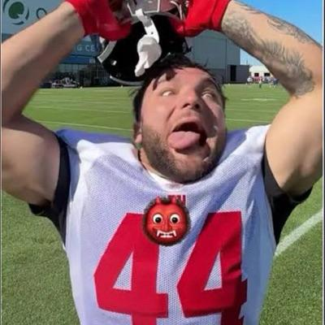
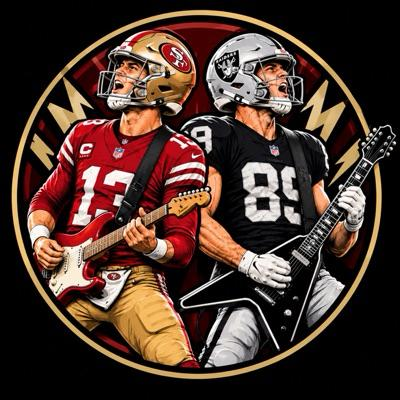
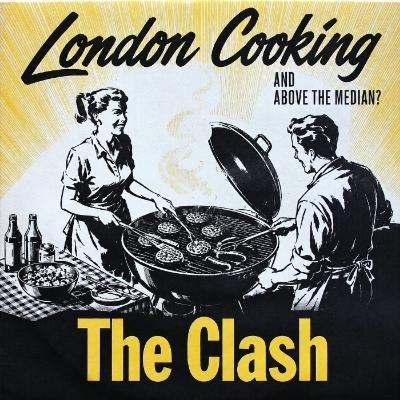

behold the lamb came in 11th and beat Bo Girds anyway, an upset by 5.34. Waiver add Germie Bernard was the lucky one, beating his projection by 12.07, and without him, that is a loss. Bo Girds's starters dropped 7 passes worth about 17.8, and the drops cost the game. Matthew Golden handled 3 of those drops personally, worth about 14.2. Bo Girds also started recent add Indianapolis Colts, a defense that finished at -0.85, which is one way to use a free agent pickup. Bo Girds has now lost 2 straight, and behold the lamb sits right at the cut with a 6-6 record.
The Game Changer is Germie Bernard, a lucky recent add for behold the lamb who scored 20.2 on an 8.13 projection. Without Bernard, that is a loss, and as a margin driver he decided an upset in which behold the lamb, 11th before the week, beat 2nd-place Bo Girds. The team is named behold the lamb, and CeeDee Lamb finished 5.51 under projection, so the waiver add got the beholding instead. Bo Girds's starters dropped passes worth about 17.8, and the drops cost the game. Bernard has beaten projection in 3 of the last 3 weeks, which is starting to look like a habit.
Game Changer goes to Germie Bernard, a lucky recent add who scored 20.2 for behold the lamb in a 5.34-point win. Underperformer is Bijan Robinson at 6.3, which makes To Infinity and Bijan sound a lot shorter than infinity. Butterfingers is Matthew Golden of Bo Girds, whose 3 drops were worth about 14.2 points. MVB Jayden Daniels scored 21 on the London Cooking bench, in a week London Cooking won by 66.4 without him.
- Jacory Croskey-Merritt0
- David Montgomery0
- Omarion Hampton5.9
- Tony Pollard7.6

To Infinity and BijanD- Kenyon Sadiq1.7
- Dalton Kincaid7.3
- Cam Skattebo0
- Nico Collins9.4
- Ladd McConkey2.2
- Rhamondre Stevenson3.6
- Lamar Jackson0
- Patrick Mahomes11.48
- Brian Robinson2
- Devaughn Vele5.7
- Josh Jacobs0
- Bhayshul Tuten22.7
- Garrett Wilson6.4
- Braelon Allen11.4
- Malik Nabers22.5
- Jared Goff0
- Breece Hall0
 Return of T MacD
Return of T MacD- Marvin Harrison4.9
- Brian Robinson2
- Bijan Robinson6.3
Unsolicited Dak Picks sent Bhayshul Tuten and Garrett Wilson to Amon-Ra Dawg Your Team and got back Josh Jacobs, who has 0 points this season. Tuten scored 22.7 for his new team, so Unsolicited Dak Picks, now 4-8, gets the F and Amon-Ra Dawg Your Team gets the A. To Infinity and Bijan traded away Bijan Robinson, which turns the team name into a tribute act, and got back Malik Nabers at position rank 2 of 38 this week. Return of T Mac paid for Bijan's 6.3 this week by handing over Jared Goff and his 114 this season, which earns a D. The rest, briefly: Pukancun on 3 took Jacory Croskey-Merritt and David Montgomery, both listed Out before their games, and flipped Ladd McConkey for Nico Collins, To Infinity and Bijan swapped Dalton Kincaid for Kenyon Sadiq, and Bo Girds gave up Patrick Mahomes for a Lamar Jackson listed Out before his game, with the trade swings for Pukancun on 3 and Bo Girds both deciding their matchups.
Grades are Tina's opinion from the fact sheet, not a computed score.

Lil Fridge beat Brock ‘N’ Roll 126.79 to 88.31, a margin of 38.48.
Return of T Mac 120.29Return of T Mac pulled the upset on Unsolicited Dak Picks by 38.82, which is generous to the word upset. Lucky recent add Carnell Tate scored 16, and Unsolicited Dak Picks answered with a season low of 81.47. The team named for Dak got 13.02 from Dak, and A.J. Brown, now listed Questionable, chipped in 3.2.
Maye d'force B with U beat Amon-Ra Dawg Your Team by 9.51, and Isaiah Likely was a decider at 9.84 over projection. Amon-Ra Dawg Your Team got lucky with recent add Bhayshul Tuten at 22.7, and recent add Garrett Wilson answered with 6.4. Jaylen Waddle and recent add Dalton Kincaid are both now listed Questionable, while Amon-Ra Dawg Your Team sits 4-8, 2 games below the cut.
This is the Matchup of the Week. Read the full story at the top. Go to the top story

London Cooking 112.48London Cooking won by 66.4, and To Infinity and Bijan's 46.08 is a season low. To Infinity and Bijan's Bijan scored 6.3, and its Top Scorer was recent add Patrick Mahomes at 11.48. Recent adds Ladd McConkey and Terry McLaurin scored 2.2 and 3.2 and are both now listed Out, so the trades are going great.
All You Need Is Love won by 12.95, and Tre Tucker decided it with 24.2; without Tucker, that is a loss. Pukancun on 3 started recent adds Cam Skattebo, who scored 0 after a trade, and MarShawn Lloyd, who managed 1. The loss leaves Pukancun on 3 at 1-11, a modest 5 games below the cut.
Drop value is an estimate: one reception at the league rate, plus the air yards at the per-yard rate, plus a touchdown when the throw reached the end zone.
Dashed line: median 106.83.
The median sat at 106.83, and Lil Fridge cleared it by 19.97 like it had somewhere else to be. To Infinity and Bijan posted a season low of 46.08 and finished 60.75 below the line, which is less a miss than a different sport. Unsolicited Dak Picks also found a season low at 81.47, a contribution nobody asked for either. Bo Girds and Amon-Ra Dawg Your Team landed 2.79 apart from the median on opposite sides, close enough to share a fence and nothing else.
Return of T Mac6-6618.97Records include the weekly median game: every team plays its opponent and the league median each week.
Return of T Mac (6-6)The Must Watch games are Lil Fridge against Return of T Mac and Bo Girds against All You Need Is Love, both near the playoff cut. Below the cut, Pukancun on 3 at 1-11 meets To Infinity and Bijan at 4-8, a showdown of the awful that someone is contractually required to win.